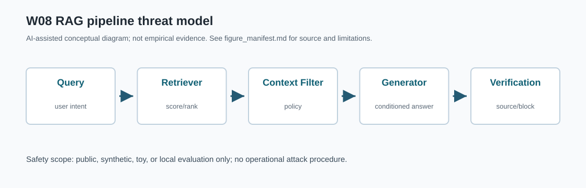
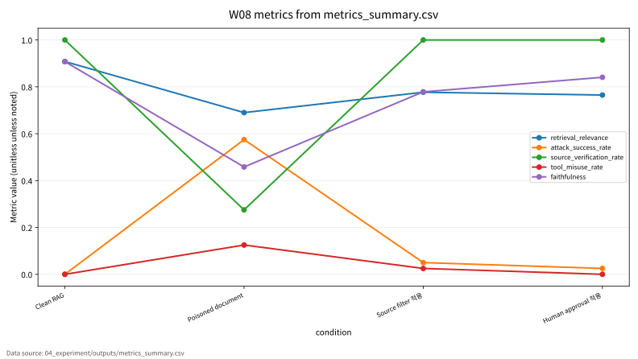

Research Presentation / W08
W08 RAG와 Prompt Injection
연구 질문: RAG와 Prompt Injection에서 성능 지표와 보안 지표를 어떻게 분리해 평가할 수 있는가?
Formula-first
Figure-first
Toy/Public/Synthetic scope
No journal logo or trademark
최종 발표본: presentation_slides.html. 기존 주차번호 HTML은 호환용으로만 유지.
Background / W08
왜 이 주제가 중요한가
이 주제는 clean 성능만으로는 안전성을 설명하기 어렵다.
A
AI 원리
모델 목적함수와 표현이 평가 지표의 출발점이다.
B
보안 표면
공격자 가정, 보호 자산, 실패 조건을 분리한다.
C
근거 관리
CSV, run log, 결과표가 같은 값을 말해야 한다.
Research Gap
기존 발표 흐름의 빈틈
| 빈틈 | 보완 방식 | 검증 상태 |
|---|---|---|
| 수식과 지표 연결 부족 | 핵심 수식, 기호표, 보안적 의미를 한 장에 배치 | 표준식 / 확인 필요 병기 |
| 표와 위협모형 분리 | 공격자·방어자·보호 자산 표로 정리 | toy/synthetic 범위 |
| 결과 그래프 출처 불명확 | metrics_summary.csv 기반 그래프만 사용 | 데이터 출처: 04_experiment/outputs/metrics_summary.csv |
Core Formula / W08
핵심 수식: Retrieval Score와 Context-Conditioned Generation
\[
s(q,d)=\frac{e(q)^\top e(d)}{\lVert e(q)\rVert_2\lVert e(d)\rVert_2},
\qquad
p(y|q,C)=\prod_{t=1}^{T}p_\theta(y_t|y_{<t},q,C)
\]
| 기호 | 의미 |
|---|---|
| \(q,d\) | query와 retrieved document |
| \(e(\cdot)\) | embedding function |
| \(C\) | retrieved context set |
| \(y_t\) | 생성 응답의 t번째 토큰 |
Formula | RAG는 query와 문서의 유사도로 context를 고르고, 그 context에 조건화해 답을 생성한다. 검색된 context가 오염되면 생성 단계가 공격 문맥에 영향을 받을 수 있다. 평가 지표 연결: retrieval_relevance, faithfulness, source_verification_rate와 연결한다.
한계: 표준 RAG 구조 설명이며 특정 벤치마크 수치를 새로 만들지 않는다.
Threat Model
공격자·방어자·보호 자산
| 구성요소 | 발표 내 의미 | 주의 |
|---|---|---|
| 공격자 | 안전한 toy/public/synthetic 범위의 평가 조건을 가정 | 실제 시스템 악용 절차 없음 |
| 방어자 | 지표, 로그, 검증 절차로 위험을 관찰 | formal guarantee와 empirical proxy 구분 |
| 보호 자산 | 모델 성능, 데이터 프라이버시, 재현성 증거, 운영 신뢰 | 없는 결과는 만들지 않음 |
| 성공 조건 | retrieval_relevance, attack_success_rate, source_verification_rate, tool_misuse_rate, faithfulness 변화가 위험을 설명하는지 확인 | CSV와 모순되면 보류 |
Evaluation Protocol
평가 프로토콜과 지표
| 평가 항목 | 대표 지표 | 기록 방식 |
|---|---|---|
| retrieval_relevance | CSV 컬럼 존재 시 그래프와 표에 반영 | 실제 실행 산출물 기준 |
| attack_success_rate | CSV 컬럼 존재 시 그래프와 표에 반영 | 실제 실행 산출물 기준 |
| source_verification_rate | CSV 컬럼 존재 시 그래프와 표에 반영 | 실제 실행 산출물 기준 |
| tool_misuse_rate | CSV 컬럼 존재 시 그래프와 표에 반영 | 실제 실행 산출물 기준 |
| faithfulness | CSV 컬럼 존재 시 그래프와 표에 반영 | 실제 실행 산출물 기준 |
Protocol | 데이터 출처: 04_experiment/outputs/metrics_summary.csv. run_log.md 또는 results.json과 모순되는 수치는 사용하지 않는다.
Figure 1 / Diagram
RAG pipeline threat model
A
Query
user intent
user intent
→
Retriever
score/rank
score/rank
→
Context Filter
policy
policy
→
Generator
conditioned answer
conditioned answer
→
Verification
source/block
source/block
B

Figure 2 / Metrics
실제 CSV 기반 지표 그래프
A

B
| condition | retrieval_relevance | attack_success_rate | source_verification_rate | tool_misuse_rate | faithfulness |
|---|---|---|---|---|---|
| Clean RAG | 0.908 | 0 | 1 | 0 | 0.908 |
| Poisoned document | 0.69 | 0.575 | 0.275 | 0.125 | 0.458 |
| Source filter 적용 | 0.777 | 0.05 | 1 | 0.025 | 0.779 |
| Human approval 적용 | 0.765 | 0.025 | 1 | 0 | 0.841 |
Paper Map
논문 5편의 역할표
| ID | 논문 역할 | 발표에서 쓰는 위치 | 기말논문 연결 |
|---|---|---|---|
| P01 | 핵심 이론 | Background / Core Formula | RAG와 Prompt Injection의 관련연구 뼈대 |
| P02 | 위협 분류 | Threat Model | 공격자·방어자·보호자산 정의 |
| P03 | 평가 지표 | Evaluation Protocol | 정량 지표와 로그 근거 연결 |
| P04 | 공격·방어 사례 | Security Implication | 보안적 함의와 방어 한계 |
| P05 | 재현성·정책 근거 | Limitation | 확인 필요 항목과 제출 전 검증 |
Paper map | 서지 세부사항과 DOI/URL은 최종 제출 전 원문 기준으로 확인한다.
Security Implication
보안적 함의
방어 평가는 source verification, block rate, tool misuse를 함께 본다.
A
분리
clean 성능과 보안 지표를 같은 값처럼 해석하지 않는다.
B
추적
수치, 그래프, 노트, Q&A가 같은 산출물을 가리킨다.
C
제한
실제 악용 절차 없이 평가 개념과 방어 관점만 설명한다.
Limitation
한계와 검증 상태
prompt injection은 방어 평가 관점으로만 설명하고 실제 우회 절차는 제공하지 않는다. toy/synthetic prompt set 기준 proxy이며 실제 시스템 침투 절차가 아니다.
| 항목 | 상태 | 다음 확인 |
|---|---|---|
| 실험 수치 | 실행 산출물 있음 | run_log.md, results.json 대조 |
| 수식 보증 | 표준식 또는 proxy | 원문 절·쪽·formal guarantee 확인 |
| 운영 적용 | 바로 적용 불가 | 실제 데이터·정책·위험평가 필요 |
Final Takeaway
기말논문 연결
W08의 결론은 지표를 분리하고 근거 파일로 추적하는 연구 설계다.
| 기말논문 장 | 연결 내용 |
|---|---|
| 관련연구 | RAG와 Prompt Injection의 핵심 이론과 보안 taxonomy 정리 |
| 위협모형 | RAG pipeline threat model 기반 공격면·방어면 정의 |
| 평가방법 | retrieval_relevance, attack_success_rate, source_verification_rate, tool_misuse_rate, faithfulness를 CSV/log 기준으로 검증 |
| 한계 | toy/synthetic 범위와 확인 필요 항목을 명시 |